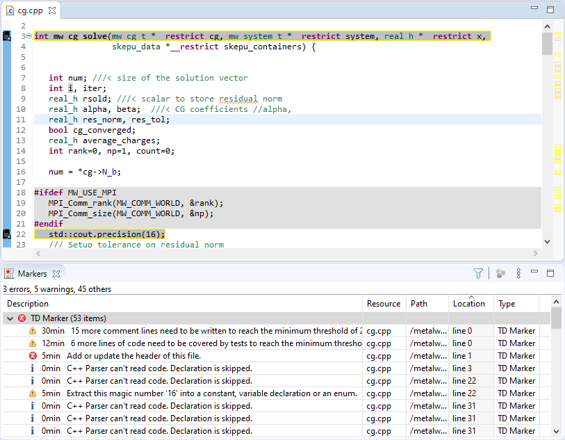

The Markers view is a view that already exists in Eclipse and as the name implies, contains marks in lines of files. Moreover, each marker can be connected with a specific type of annotation in order to highlight the specific line in the editor. One very big advancement is that someone by hovering in an annotation can get the message of the marker directly. Finally, the filtering options in the Markers view are very important, as it can help you see the most import markers, the ones that correspond to the selected file, and so on.
For these reasons we created one marker of our own named “TD Marker” and a specific type of annotation with a search icon and by putting the line in a yellow box (see Figure X). Hence, for each of the issues found from SonarQube, we created an instance of the TD Marker for that specific line but with a different severity type. As Eclipse has three different states of severity (Error, Warning, Info) and SonarQube has five (Blocker, Critical, Major, Minor, Info) we compromised by grouping in three states. So all the SonarQube issues with severity Info added to the Eclipse severity Info, all the SonarQube issues with severity Minor and Major added to Eclipse severity Warning and finally the Critical and Blocker added to Eclipse severity Error.
